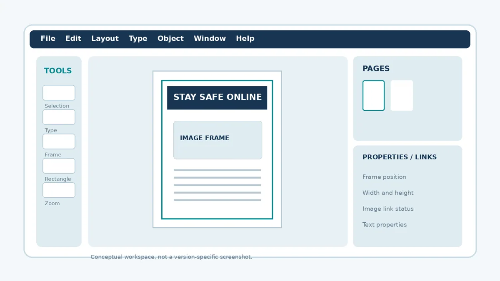
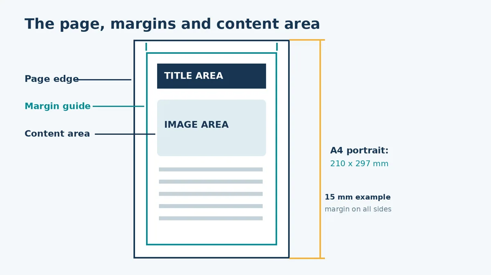
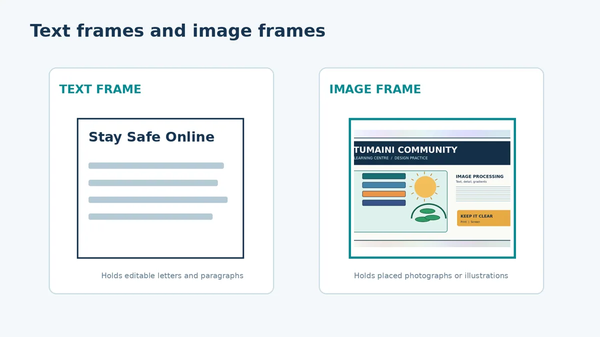
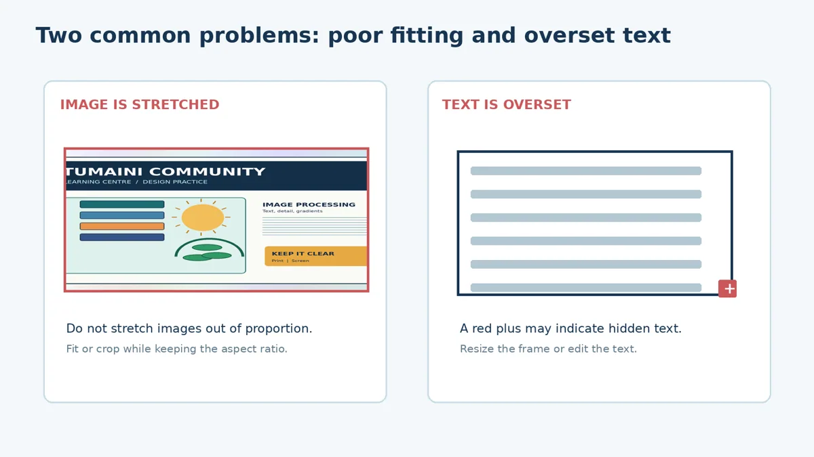
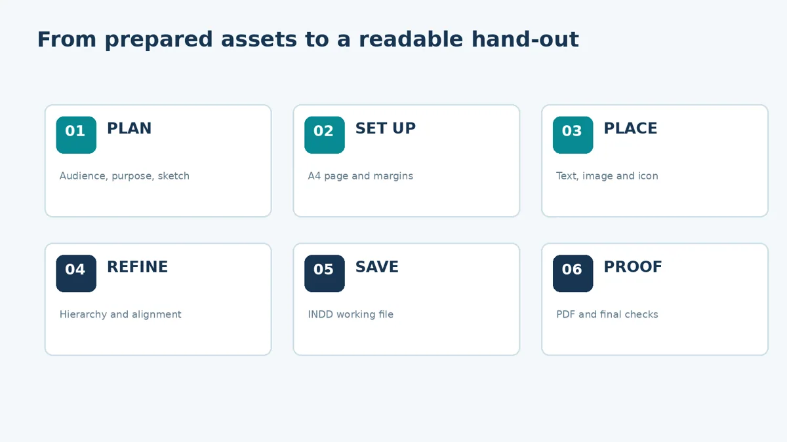
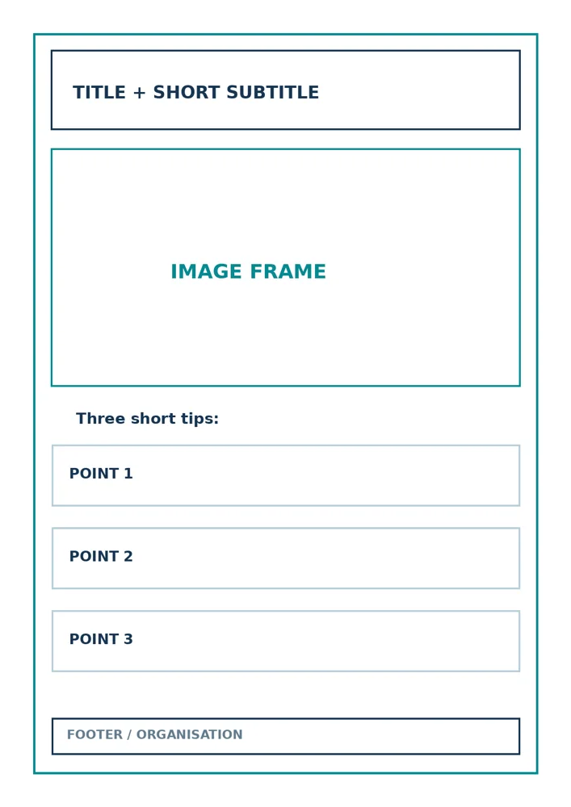

Introduction to Document Layout with Adobe InDesign
Set up an A4 page, place text and illustrations, and export a PDF proof.
Lecture notes
In the previous lessons you prepared an image in Photoshop and created a simple vector icon in Illustrator. This lecture brings those resources into a page-layout document. Instead of making another illustration, you will decide where information should appear, how it should be read, and how the completed page should be saved.
Learning outcomes
- Explain the purpose of page-layout software and identify the main parts of the InDesign workspace.
- Create an A4 portrait document with suitable margins and simple layout guides.
- Place a title, short body text and prepared image into the correct frame types.
- Align and format page elements to create a readable educational hand-out.
- Save an editable document and export an initial PDF proof for checking.
1. What is document layout?
Document layout is the deliberate arrangement of text, images, shapes and open space on a page. A good layout guides readers from the most important message to supporting details without forcing them to search for information. Page layout is therefore more than decoration: it helps readers recognise meaning, follow a sequence and use a publication.
For example, the hand-out “Stay Safe Online” should present its title clearly, introduce the subject in one sentence, show a relevant image and communicate three practical safety habits. Readers should understand the message quickly even if they do not read every word.
Adobe InDesign is a page-layout application. Photoshop is primarily used to edit raster images, while Illustrator creates vector artwork. InDesign assembles these resources alongside editable text. Similar layout concepts can also be practised using suitable alternatives such as Scribus, although tools and menus may differ.
2. Understanding the InDesign workspace
The workspace contains a page area surrounded by controls. The Tools panel is used to select objects and create text or graphic frames. The Pages panel manages document pages. Other panels allow you to control object size, position, formatting and links to imported files. The grey area outside the page is called the pasteboard; objects placed there do not normally appear in the exported page.

Figure 7.1. A conceptual layout of a page-design workspace; real interfaces vary by version.
3. Page size, margins and guides
The A4 page size is 210 × 297 mm. Portrait orientation means the page is taller than it is wide. Margins are spaces between the page edge and the main content. For this classroom exercise, use 15 mm on all four sides. These measurements are teaching settings, not a commercial print specification.
A margin of 15 mm on both sides leaves a content width of 210 − 15 − 15 = 180 mm. The content height is 297 − 15 − 15 = 267 mm. These simple calculations help you recognise the usable area before placing content. Guides are non-printing reference lines that help keep headings, photographs and paragraphs aligned.

Figure 7.2. A4 page edge, margin guides and usable content area.
4. Frames: the basic containers of a layout
InDesign uses frames to hold content. A text frame contains editable letters and paragraphs, whereas a graphic frame contains a placed photograph or illustration. You may resize a frame or move it on the page without changing the original content file. It is useful to think of the frame as a window through which part of the content is shown.

Figure 7.3. Text frames and image frames serve different purposes.
A graphic may be placed through File > Place, and the Links panel helps manage placed assets. Keep the original image file inside the project folder. If you move or rename it, the linked document may no longer find it. Placing an image inside a small frame does not mean the original image file has been permanently cropped.
5. Visual hierarchy and readable text
Visual hierarchy is the order in which the reader is likely to notice information. On our hand-out, the largest title is followed by a short introduction, an image and three concise tips. A small organisation name belongs near the bottom. Use a limited number of font sizes, consistent alignment and sufficient space between related blocks.
A suitable beginner layout has one clear headline, one principal image and short blocks of information. Crowding the page with many colours, decorative shapes or unrelated pictures makes the message harder to read. When using colour, confirm that text remains clearly visible against its background.
6. Fitting images and recognising overset text
When placing an image in a frame, resize or fit it while preserving its proportions. Stretching its width or height independently can distort the image. If the frame is smaller than the placed content, part of the image may be hidden; this is a controlled crop, not necessarily a mistake.
Text may also exceed the available space. InDesign can indicate overset text with a small red plus symbol on a text frame. The hidden words will not be fully visible in the publication. Check by enlarging the frame, reducing unnecessary wording or changing the flow of the text.

Figure 7.4. Two issues to check before exporting a proof.
7. Building your first one-page hand-out
Start with a brief sketch. Then create one A4 portrait page, set 15 mm margins and add a title frame near the top. Place the prepared Tumaini image in a wide image frame. Add three short tips underneath and put the organisation name in the footer. Keep the text editable and use guides to make the main elements line up.

Figure 7.5. The six-stage layout workflow used in this exercise.
At this stage, the aim is a correctly structured first draft, not a polished final design. In Lecture 8 you will refine the text formatting, spacing and proofing. If you do not have InDesign, make a careful labelled A4 sketch with the same required components, then complete the digital version during practical time.
8. Working files, export files and proofing
Save your editable project as an InDesign document (.indd). An INDD file preserves frames, editable text and page arrangement for later changes. Export a PDF for checking or sharing. The PDF is a proof, not a substitute for saving the editable project. Inspect the exported page: can you see the entire title, all three tips, the image and footer? Are any elements awkwardly aligned?
Keep a simple project folder with clearly named source images, the editable design and PDF proof. This reduces missing-link problems and makes it easier to resume work next week. More advanced print-production settings, including bleed and printer colour specifications, will be studied later in the module.
9. Common beginner mistakes
| Mistake | Why it matters / corrective action |
|---|---|
| Text is too close to the page edge | Leave a consistent margin; move frames inside guides. |
| Photograph looks stretched | Use a proportional fitting option instead of changing width and height independently. |
| Some text is hidden | Check for overset text and adjust frame size or wording. |
| Image link is missing | Keep the source image in the project folder and relink it when necessary. |
| Only the PDF is saved | Save the INDD source file as well as the proof. |
Key ideas to remember
InDesign is used to assemble publications, not to replace the specialist image editing performed in Photoshop or vector drawing performed in Illustrator. Effective layout begins with the reader and the message. Page dimensions, margin guides, frames and alignment help transform prepared content into an organised publication. Always save an editable file and inspect the exported proof.
Review questions
1. What is the purpose of page-layout software?
2. How does a text frame differ from an image frame?
3. An A4 page has 15 mm margins all around. What content width remains?
4. Give two reasons to use margins and guides when arranging objects.
5. What does overset text mean, and how could you correct it?
6. Why should you keep the editable INDD file even after exporting a PDF?
Simple practical activity
Build the first hand-out draft
Create an A4 portrait page with margins, a readable title, short body text, one image and a small vector icon. Save the editable document and export a first PDF.
Read the full guided practical instructions
Your task is to prepare the first editable version of the “Stay Safe Online” educational hand-out. In this lesson, focus on correct page setup and sensible placement. You will polish the publication in Lecture 8.
What you need
- Adobe InDesign and a computer; alternatively, A4 paper and a pencil for a preliminary layout.
- Prepared image from Lecture 5 (supplied again in the resources).
- Lightbulb icon from Lecture 6 (PNG supplied; SVG also included for reference).
- The text file named Tumaini_Handout_Text.txt.
Part A — Sketch your layout first
Examine the wireframe below. Identify the title area, image frame, three information blocks and footer. Use the empty space in your workbook or a separate A4 sheet to draw an improved version. Label the position of each element.

Reference wireframe; use a separate A4 sheet for your annotated design if needed.
Part B — Set up your InDesign file
- Create a folder named L07_Tumaini_Handout. Put your prepared image, icon and text file inside it.
- Open InDesign and choose File > New > Document. Select A4, portrait, one page, and turn facing pages off if that option is shown.
- Use 15 mm top, bottom, left and right margins. For this draft, leave bleed at 0 mm; commercial print settings will be addressed later.
- Save the new document as Tumaini_Handout_Draft.indd in your project folder.
Part C — Add the frames and content
- Create a text frame near the top, type STAY SAFE ONLINE and make it the principal headline.
- Create an image frame below the heading. Select File > Place, choose the prepared Tumaini image, and fit it without stretching.
- Make a text frame for a short subtitle. Add three short tips below the image using separate frames or one clear body-text frame.
- Add a small footer for TUMAINI COMMUNITY LEARNING CENTRE. You may place the icon in a small graphic frame.
- Use the margin guides to align frames; leave consistent space between the heading, image and tips.
Part D — Check and export
☐ All text is inside the page margins.
☐ The image appears in proportion, without visible distortion.
☐ No heading, tip or footer is hidden or overset.
☐ Source image files remain in the project folder.
☐ The editable .indd file is saved; the draft PDF opens correctly.
Choose File > Export and select Adobe PDF (Print) or another PDF output appropriate for this classroom proof. Name the file Tumaini_Handout_Draft.pdf. Open the PDF and compare it with your original sketch.
Recording your work
| Question | Your observation |
|---|---|
| Did you use A4 portrait and 15 mm margins? | ___________________________________ |
| Which frame holds the photograph? | ___________________________________ |
| One thing you improved in the layout | ___________________________________ |
| One difficulty you encountered | ___________________________________ |
What to submit
Submit your draft INDD file and its PDF proof. If you completed only the paper route, submit a labelled A4 layout sketch and keep the resource files ready for your next computer practical. Write two sentences explaining why you placed the title and image where you did.
Review questions
Try explaining each answer in your own words before using the quiz.
- What is the purpose of text and image frames in InDesign?
- Explain the role of margins in an A4 hand-out.
- What does overset text mean?